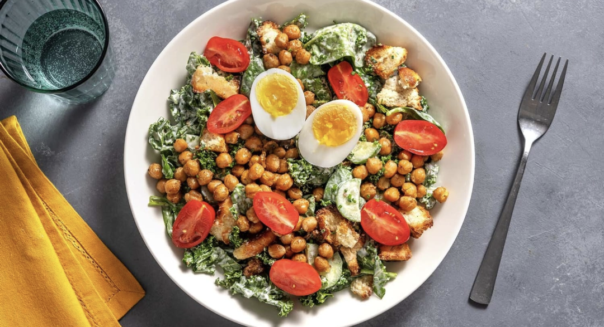

BBQ-Spiced Chickpea and Cobb Salad

Description
Excellent salad, perfect for dill-lovers. Can be made with or without croutons depending on the number of calories desired.
The recipe written serves 2. Ingredient amounts don't need to be exact for salads. For more servings, use entire packages of perishable ingredients from the grocery store (within reason) and combine according to taste.
Ingredients
- 398 mL Chickpeas
- 2 Eggs
- 1 tbsp BBQ Spice Blend
- 1 tsp Dill Garlic Spice Blend
- 7 g Chives
- 66 g Mini Cucumber
- 113 g Baby Tomatoes
- 1/2 tbsp White Wine Vinegar
- 56 g Baby Spinnach
- 56 g Kale, chopped
- 55 g Mayonaise
- Ciabatta Roll (optional)
Steps
- Bring a medium pot of water to a boil and preheat the oven to 450°F. Start preparing the recipe when the water is boiling and the oven is ready. Drain and rince chickpeas, then pat dry with paper towels. To a parchement-lined baking sheet, add chickpeas, BBQ spice blend and 1 tbsp oil. Season with salt and pepper, then toss to coat. Roast on the middle oven rack for 12-14 min, until almost crispy. Stir chickpeas, then return to the middle oven rack for another 6-10 min, until crisp.
- Meanwhile, once the water reaches a boil, reduce heat to medium. Using a slotted spoon, lower eggs into the water. Cook for about 8 min for a softly set yolk. Drain and rinse eggs with cold water for 30 sec, until cool enough to peel. Peel, then halve eggs. Season with salt.
- Meanwhile, roughly tear ciabatta into 1-inch pieces. To another parchement-lined baking sheet, add ciabatta and 2 tbsp oil. Season with salt and pepper. Toss, massaging with hands to coat. Bake on the top rack of the oven for 4-6 min, until crisp and golden.
- Meanwhile, wash and dry all produce. Roughly chop kale. Cut cucumber into 1/4-inch half-moons. Thinly slice chives.
- To a large bowl, add mayo, Dill-Garlic spice blend, half a teaspoon sugar, 1/2 tbsp vinegar and 1 tbsp oil. Season with salt and pepper, then stir to combine.
- To the bowl with the dressing, add kale, baby spinach, chives, croutons and cucumbers. Toss well to coat and combine. Divide salad between plates. Arrange boiled eggs, chickpeas and tomatoes over top. Enjoy!